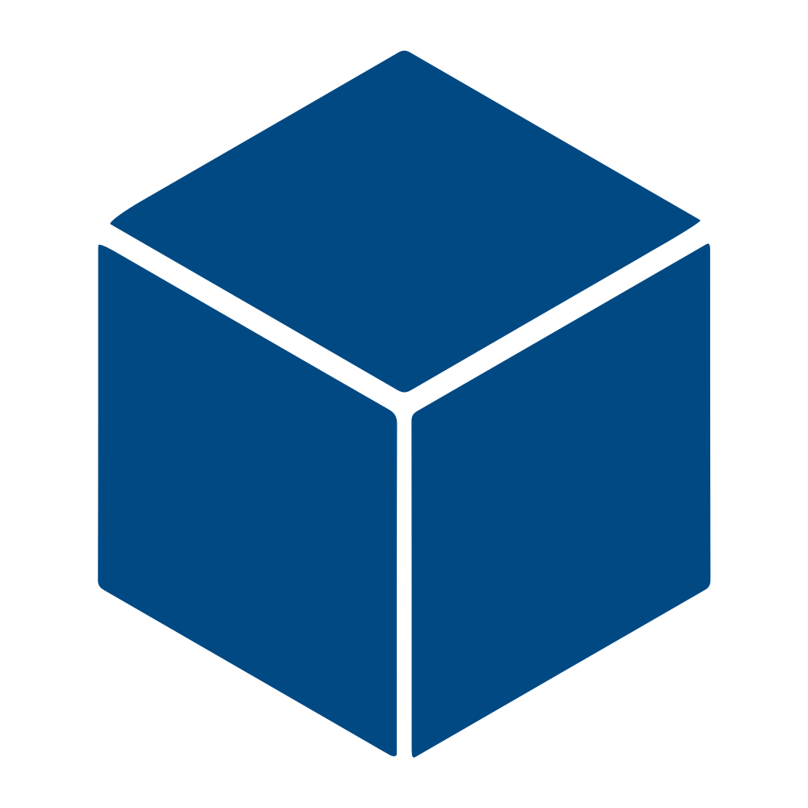

Карти Атласу є інтерактивними, тобто надають можливість користувачам змінювати картографічне зображення, отримувати додаткову інформацію про об'єкти на карті тощо. Взаємодією користувачів з системою та виконання певних інтерактивних операції забезпечує інтерфейс карт Атласу, оснащений спеціальними функціональними кнопками. Перелік функціональних кнопок інтерфейсу карт Атласу наведено нижче
| Допомога | |
| Легенда | |
|  | Тематичні шари |
| Таблиця | |
| Базові карти | |
| Пошук | |
| Збільшити | |
| Зменшити | |
| Карта цілком | |
| Згорнути вікно з картою | |
| Розгорнути карту на весь екран | |
| Закрити вікно з картою |
Більш детально розглянемо основні функціональні кнопки інтерфейсу
Знайомство з картою бажано починати з вікна легенди
В легенді "розшифровані" усі умовні позначення, які нанесені на карті. А перший заголовок завжди позначає назву відкритої карти. Вікно легенди можна пересувати. Для цього наведіть курсор миші на "шапку" вікна і дочекайтесь зміни курсора
Тепер затисніть кнопку миші та одночасно переміщуйте вікно у будь-яке місце. Також забезпечена можливість змінювати ширину вікна з легендою. Для цього достатньо потягнути затисненою кнопкою миші правий край вікна у необхідний бік
Кожен тематичний шар карти - це сукупність графічних символів, нанесених на базову карту (географічну основу), що відображають розміщення (розподіл) певних об'єктів або явищ реальної дійсності, виражених у показниках. Так, звернувшись до легенди (див. вище), ми побачимо, що розподіл групи об'єктів (рослини) виконаний на основі показника (рослини, занесені до Червоної книги України) у відповідних одиницях виміру (% від загальної кількості) і відображений за допомогою різних відтінків зеленого кольору.
Після натискання на кнопку "Тематичні шари" відкриється вікно
Натискаючи на квадрати поряд з назвою шару, можна вмикати/вимикати тематичні шари, які відображатимуться на карті. Вікно тематичних шарів також є пересувним
Кнопка "Таблиця" надає доступ до перегляду атрибутивних даних у табличному вигляді для кожного тематичного шару
| 1. "Початковий стан таблиці" - стан таблиці за замовчуванням |
| 2. Вибір тематичного шару, за даними якого буде побудована таблиця |
| 3. Вибір кількості записів, які будуть одночасно відображатися в таблиці |
| 4. "Детально" - показ додаткових атрибутивних даних |
| 5. Вибір атрибуту з випадаючого списку / Фільтрація за ключовим словом |
| 6. Перегортання сторінок таблиці |
| 7. Фільтрація за ключовим словом / Вибір атрибуту з випадаючого списку |
| 8. Показ місцеположення об’єкта на карті |
| 9. Сортування об’єктів в таблиці (за зростанням / спаданням або за абеткою) |
| 10. Пошук об’єктів в таблиці |
Вікно "Таблиця" відкривається лише тоді, коли в переліку тематичних шарів активований хоча б один шар. Вікно з таблицею можна переміщувати
Базова карта (БК) - це географічна основа ("основна карта"), на яку накладаються тематичні шари. БК Атласу є мультимасштабними і представляють територію у різних масштабах (рівнях масштабування). Змінювати рівень масштабування можна за допомогою коліщатки миші або функціональних кнопок та . В Атласі використовується 3 БК: Open Stree Map, Open Street Topo (загальногеографічна карта) та "Національна карта ISGEO". З випадаючого списку можна обрати будь-яку з БК
Пошук дозволяє визначати місцеположення об'єкта/явища на карті за певними атрибутивними даними об'єкта/явища. Для цього потрібно обрати тематичний шар, назву атрибуту за яким буде здійснюватися пошук та умови пошуку
Перед вибором тематичного шару для пошуку потрібно перевірити, що необхідний шар увімкнений у вікні "Тематичні шари" та відображений на карті. Так, для тематичного шару "Рослини, занесені до Червоної книги України" було обрано для пошуку атрибут "Область", встановлена умова "Текст" та введено пошуковий запит "київсь"
Для того, щоб місцеположення об'єкта/явища, до якого відноситься атрибут, було знайдено на карті, необхідно обрати один з запропонованих варіантів з випадаючого списку під пошуковим запитом. Більшість атрибутів виражені у текстовій формі, однак бувають і числові. У цьому разі перелік умов пошуку буде складатися з таких математичних операторів
Наприклад, при виборі оператора ">" та введені запита "3" будуть запропоновані всі значення атрибутів, які більше 3 (у даному разі це будуть області України, в яких кількість рослин, занесених до Червоної книги, складає більше 3% від загальної кількості за областю)
Збільшення рівня масштабування карти. Цю функцію також можна виконувати за допомогою коліщатки миші
Зменшення рівня масштабування карти. Цю функцію також можна виконувати за допомогою коліщатки миші
Встановити початковий рівень масштабування карти (за замовчуванням)
Спливаючі вікна надають додаткову інформацію про об'єкти/явища, які відображені на карті за допомогою тематичних шарів. Для того, щоб відкрити спливаюче вікно, достатньо натиснути на карту в будь-якому місці, яке вкрите тематичним шаром
Діаграми також надають додаткову інформацію за допомогою спливаючих вікон. Необхідно лише навести курсор миші на діаграму або її частину (сектор)